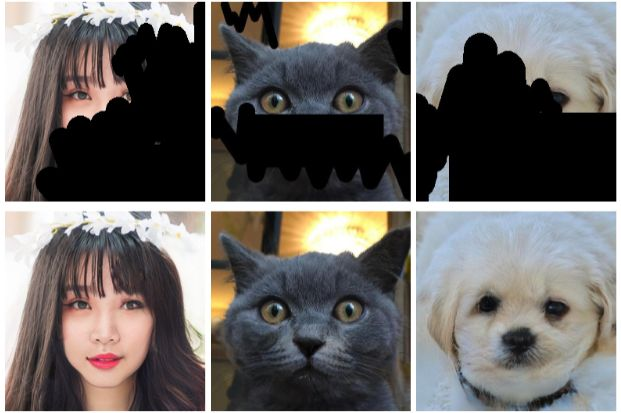
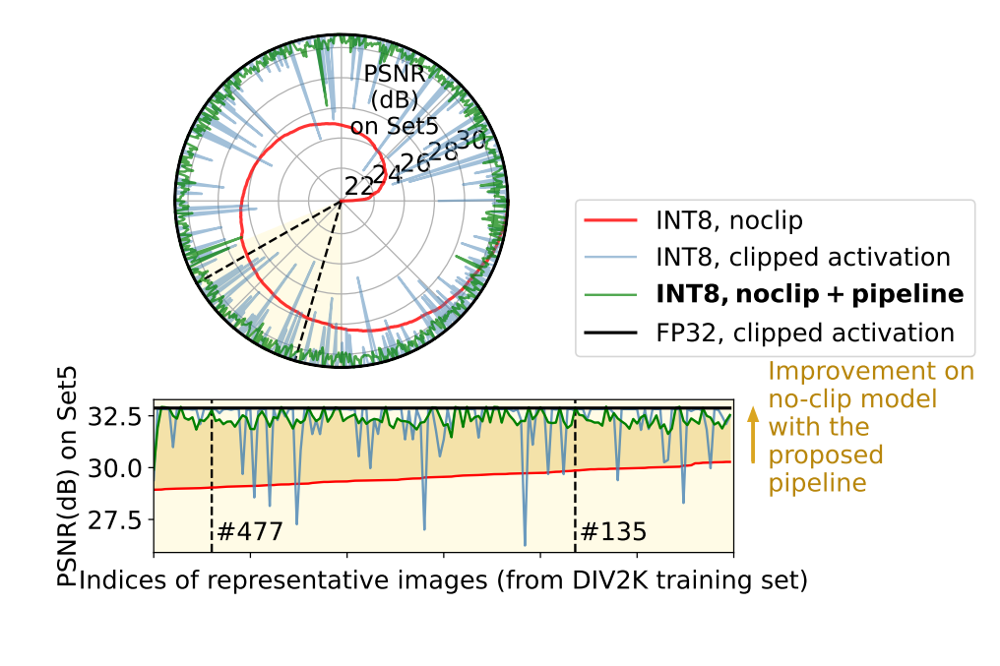
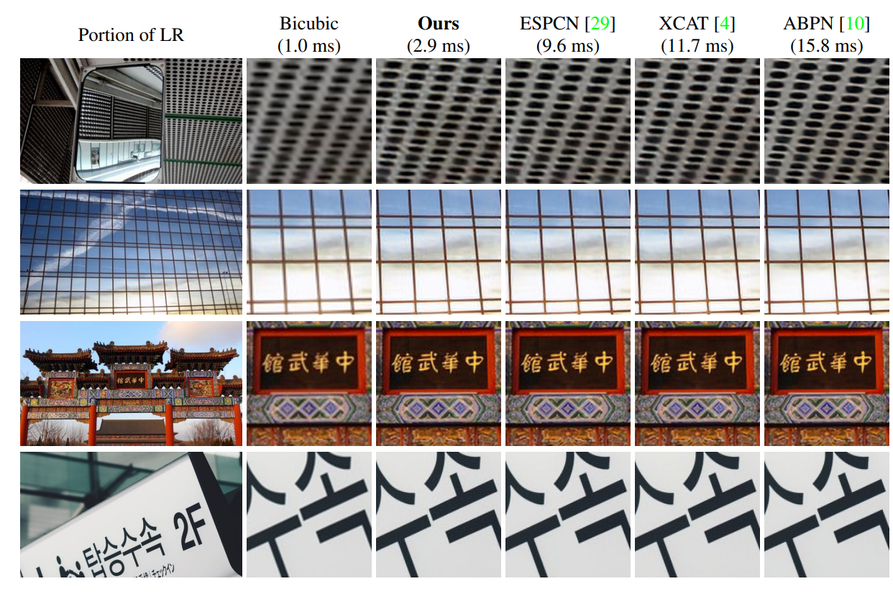
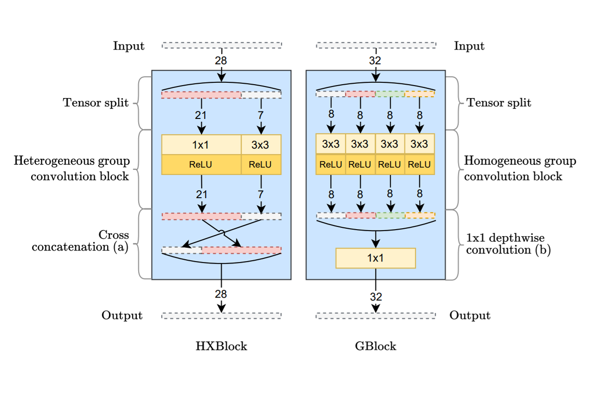
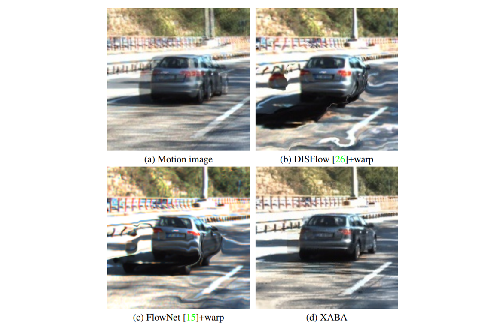

Bahri Batuhan Bilecen
👋 Hi there!
I’m Batuhan, a MSc computer engineering student at Bilkent University, and a full-time research engineer at Aselsan Inc. in Ankara, Türkiye. I received my electrical and electronics engineering BSc degree from Middle East Technical University (METU) with high honors in 2022, in Ankara, Türkiye.
I have worked on various topics throughout my BSc education such as computer architecture, image signal processing, and computer vision applications for unmanned vehicles, under supervisions of Prof. A. Aydin Alatan and Prof. Kemal Leblebicioglu. Currently, I am working on my MSc thesis about inverting 3D generative models, under the supervision of Assoc. Prof. Aysegul Dundar.
My current research mainly revolves around computer vision with deep learning: deep generative networks, inverse problems in image restoration, and neural network optimization.
📚 Publications
-
IEEE/CVF International Conference on Computer Vision (ICCV), 2023.
-
British Machine Vision Conference (BMVC), 2023.
-
IEEE/CVF Conference on Computer Vision and Pattern Recognition (CVPR), NTIRE Workshop, 2023.
-
European Conference on Computer Vision (ECCV), Advances in Image Manipulation (AIM) Workshop, 2022.
-
IEEE/CVF Conference on Computer Vision and Pattern Recognition (CVPR), Embedded Vision Workshop, 2022.

Powered by Jekyll and Minimal Light theme.